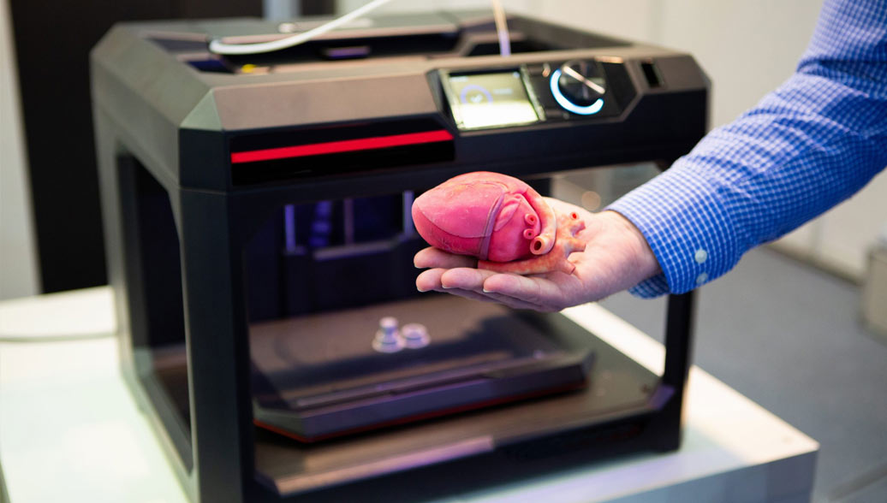

Технологические тренды 2025 года
-
3D-печать
Если вспомнить основные инновации, которые нам дало развитие науки и технологий в периоде 2013-2023 годов, то нельзя не выделить 3D-печать. Уже сейчас перспективы 3D-печати крайне многообещающие. Ученые активно развивают существующие методики трехмерной печати, разрабатывают новые технологии и типы материалов, находят новые сферы применения.
В целом, перспективы определены для многих сфер.
Строительство
3Д печать домов, или контурное строительство.
Электроника
Огромный прорыв в этой области – создание на 3D-принтере графенового аккумулятора с неограниченным сроком эксплуатации.
Автомобильная и аэрокосмическая промышленность
Будущее 3D печати во многом основано на ее способности воспроизводить практически любые элементы различной сложности.
Фармацевтическая промышленность
Да-да, можете себе представить. Будущее 3D печати – в изготовлении таблеток и прочих лекарственных средств.
Трансплантология
Уже сегодня 3Д принтеры позволяют выполнять печать заменителей костей, суставов и сосудов из специальных материалов. В ближайшем будущем ученые планируют расширять ассортимент продукции, применяемой в трансплантологии.
Пищевая промышленность
3Д принтеры для печати еды постепенно отвоевывают пространство в кафе и ресторанах. Хотя это, вероятно, одна из самых сырых технологий 3Д-печати, потенциал заложен и в ней.